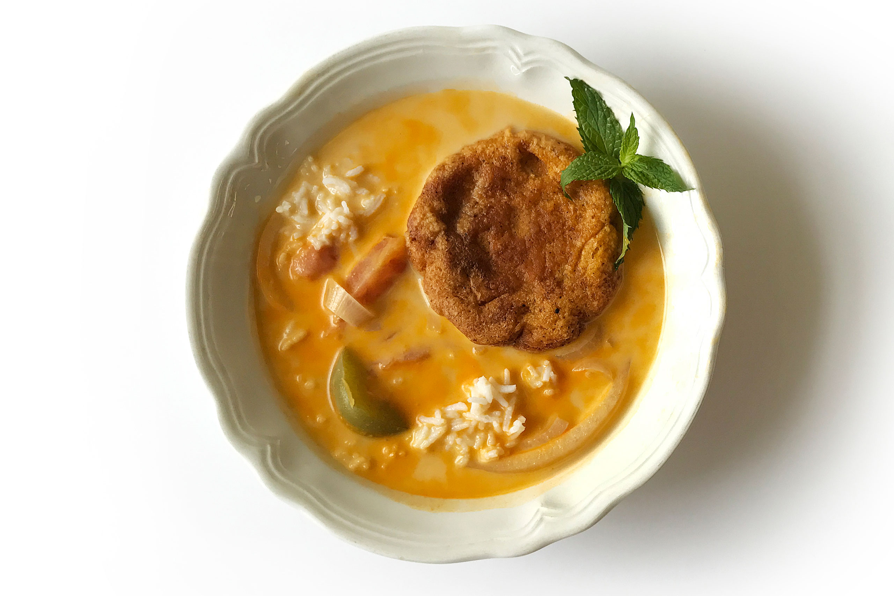

Sopa de queso

Descripcion
La sopa de queso es un platillo tradicional en la celebración de la cuaresma en Nicaragua.
Ingredientes
- 2 tazas masa con especias
- 1/2 litro leche
- Apio, cebolla, chiltoma, ajo, perejil
- Culantro, cebollín, hierbabuena
- 1 libra cuajada o queso seco ahumado
- 2 tomates
- Achiote, sal
- 1 clara de huevo
- 1 Consomé de pollo
- 1 bolsita sabor y color
- Vegetales de preferencia cortados en cubos medianos
- Agua
- Caldo de pollo (opcional)
- 1/2 barra mantequilla
- Aceite para freír
Pasos
- Cortar finamente las especias y colocarlos una parte en un tazón con la maseca, el queso o cuajada rallada finamente,
achiote, el sobre de sabor y color, la clara de huevo, agua (o el caldo), la mantequilla, y mezclar hasta lograr una masa consistente para poder moldear y freirla.
No agregar sal porque el queso ya tiene la sal necesaria.
- Poner a hervir el agua y agregar los vegetales con el resto de especias finamente picados (a excepción del perejil, que es solo para la masa y el culantro y
hierbabuena son hasta el final) esperar que suavicen mientras tanto, hacer tortas o rosquillas con la masa de modo que no quede muy fina y poner a freír, reservar
- Cortar en rodajas el tomate, la cebolla y la chiltoma y poner a freír en un poco de aceite y reservar.
- Cuando los vegetales estén suavizando, agregar más agua, la leche, una pizca de sal (recordar que las tortas le aumentarán la sal a la sopa),
achiote, el consomé de pollo y corregir el sabor, esperar que comience a hervir.
- Cuando ya este hirviendo, agregar a la sopa las tortas o rosquillas, y la preparación de tomate frito, la hierbabuena y el culantro picado,
esperar que comience a hervir de 2 a 3 minutos, porque si se deja más tiempo se van a disolver y quedará muy espesa, apagar y servir.
- Servir caliente
Home